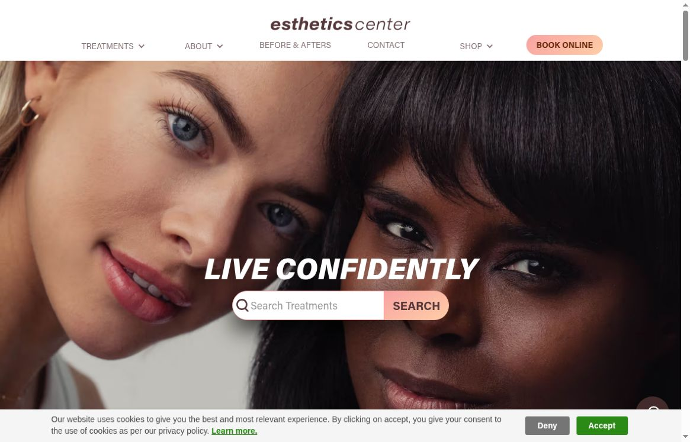
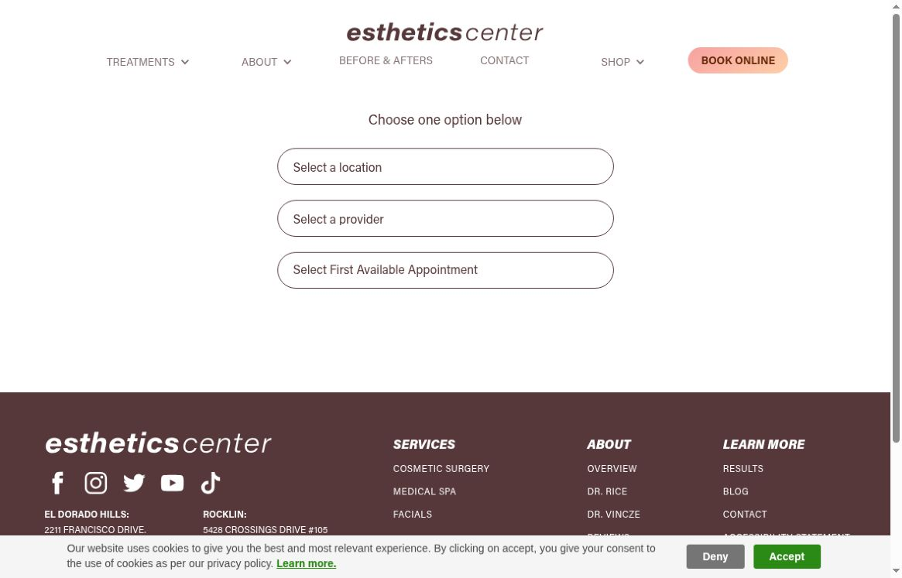

NAMED CLINICIANS
Detailed physician biographies explain the people and training behind the practice.

 PREPARED FOR / Esthetics CenterLET’S TALK ↗
PREPARED FOR / Esthetics CenterLET’S TALK ↗You already bring together named clinicians, detailed results and location-based booking. Vessel would support that foundation with clearer patient journeys, disciplined website maintenance and focused clinician-led films.
SEE THE OPPORTUNITIES + OUR FIXES ↘

REAL BUSINESS IMAGERY. A TAILORED VESSEL PROPOSAL.
Detailed physician biographies explain the people and training behind the practice.
The booking page offers El Dorado Hills, Fair Oaks, Rocklin and Sacramento.
Before-and-after work, testimonials and a physician video are already part of the site.
What is working: official website, reviewed October 20, 2026.
Video, websites and thoughtful execution.
5.0 / 18 Google reviews ↗
As displayed on Vessel’s website, October 20, 2026.
This is a refinement partnership for an established marketing operation. The opportunities below come from the current public experience, not an assumption that marketing is missing.
The online-booking entry presents location and provider selectors plus first available. A new patient may not yet know which provider fits the treatment they are considering.
Add a short “new here?” guide before the scheduler: treatment interest, location, what happens at a consultation and a clearly labeled assisted-booking route.
Four distinct Google Tag Manager container IDs were visible in the loaded homepage scripts. Analytics and session tools are also present. This alone does not prove duplicate measurement.
Map each owner and event, test consent behavior and check for duplicate conversion firing. Remove only confirmed redundant code after agreement with the existing team.
The homepage module displays 452 reviews, while the El Dorado Hills Google profile currently shows 4.9 stars from 1,360 reviews. Those scopes may differ. Sampled homepage “Read More” links point back to the page rather than the source.
Label the location and source behind each review count, connect reviews to that source where available, and agree on a refresh method. Preserve the strong location-level proof without mixing totals.
The public feedback page connects review or feedback entry with a treatment giveaway. Its destination and routing deserve a careful policy review before wider promotion.
Work with your compliance lead to separate private feedback, public review requests and promotional entry. Document each route and keep requests neutral.

Captured October 20, 2026. The entry offers location, provider and first-available routes; no appointment was submitted.
Fresh mobile lab run: Performance 29/100, LCP 20.7s and TBT 7,090ms. Separately, the latest 28-day origin field data passed Core Web Vitals with LCP 0.9s. Review scripts, cache policy and first-load media without claiming all visitors are slow. Lighthouse 13.5, emulated Moto G Power, Slow 4G, October 20, 2026; one lab run.
El Dorado Hills Google Maps showed 4.9 stars / 1,360 reviews, 2211 Francisco Drive and a tracked booking route. An owner post was marked “1 day ago.” Other locations were not independently audited.
Instagram showed 51.5K followers, educational highlights and clinician collaboration posts. Post-detail access required sign-in, so exact Instagram dates and engagement remain unverified.
Active Meta ads from the exact Esthetics Center Facebook page were visible. Sample library IDs: 954309030556552 and 2150481545745919. Existing creative should be audited collaboratively; public ads do not reveal spend or results.
Location and provider selection loads. No appointment was reserved and no patient details were entered.
Google AI Mode named Esthetics Center for “med spa in El Dorado Hills” in this session. This positive sample is not a share-of-voice benchmark or a guarantee. Homepage title and description are present.
Public review dated October 20, 2026. Observations are limited to the inspected pages and session. No account access, performance result, hiring availability or business outcome is assumed.
Clear responsibilities, a focused starting point and a production plan agreed with your team.
Improve the booking introduction, source-linked proof and treatment-to-location paths within the existing site.
Plan questions, film approved explanations, edit accessible captioned cuts and organize a reusable content library.
Coordinate a tag audit and speed baseline, then test approved creative against meaningful consultation outcomes.
Proposed scope for discussion. The final page list, filming cadence, deliverables and timing depend on access, permissions and approvals. Your team approves factual claims, brand use and publishing. No production quantity or business result is promised here.
Three starting concepts for an approved pilot. Open a card to see the shot plan.
A clinician explains the conversation, assessment and questions a new patient should bring. Film a staff demonstration, not patient records.
A clinician explains how goals and suitability shape an individualized plan. Avoid universal promises or unapproved clinical claims.
A welcoming walk-through of one location, from entrance to consultation room, with practical arrival and contact information.
Concepts only. Location access, participant releases, permitted filming areas and the appropriate approval process are agreed before production.
A practical sequence, with approval gates before production, publication or paid distribution.
Meet the marketing and clinical leads. Confirm priority location, existing account owners and the approval route.
Improve the first booking journey, map measurement and produce a clinician-led pilot film set.
Review completed consultation paths, content questions and measured site performance. Agree on the next iteration.
Schedule and recurring scope would be agreed after discovery. Reporting should separate observed activity from attributable outcomes; views alone are not proof of visits, qualified inquiries or revenue.
 Vessel client / published creative work
Vessel client / published creative work Megan Meyerdick · Precision Home Loans
Megan Meyerdick · Precision Home Loans